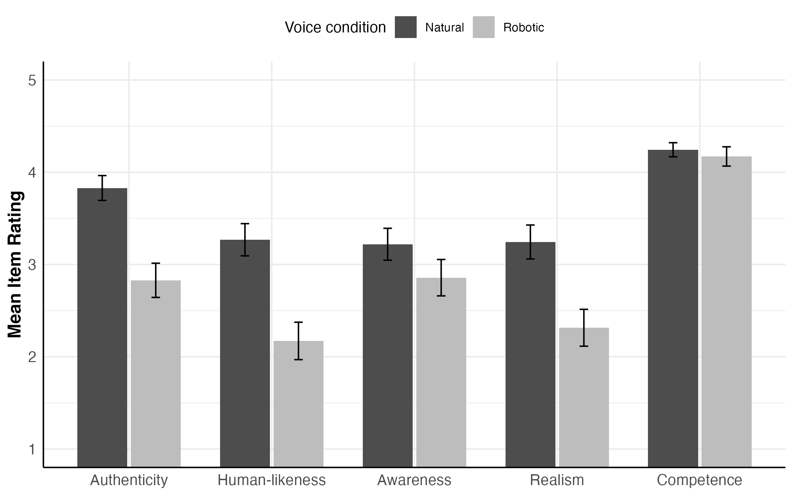
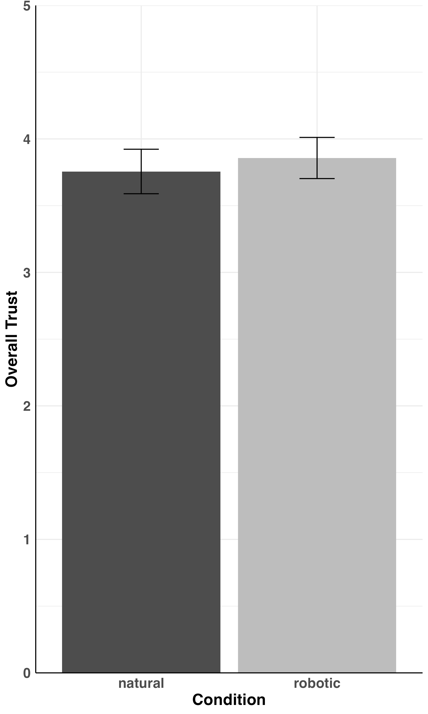

Perceptions of AI voice assistants
Code and stimuli available here: GitHub
Spoken language models generally have three components: one that recognizes speech, one that processes it and generates a response, and one that voices the response. This study tested whether the quality of that voiced response shapes how users perceive the system.
Listeners heard either a natural synthetic response or the same response processed to sound more robotic. The robotic voice received lower ratings for authenticity, human-likeness, and realism, but it was not rated as less aware, competent, or trustworthy.
These results suggest that voice quality influences how socially human-like a system seems, but is not necessarily what drives perceptions of its competence or trustworthiness.
Listen for yourself
Natural Response
Robotic Response
Both samples use the same career estimation response. The robotic version uses the experiment’s 110 Hz modulation effect and added noise.


I collaborated on this project with Michelle Cohn (UC Davis).